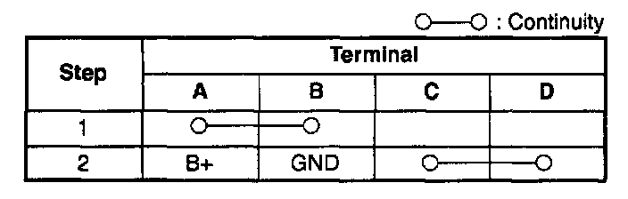
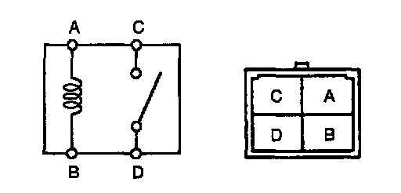

Condenser Fan Motor Relay: Testing and Inspection
Condenser fan relay1. Verify that A/C switch and fan switch are off.
2. Start the engine and let it idle.
3. Verity that the condenser fan is not operating.
4. If condenser fan is operating, inspect:
- Condenser fan relay for stuck in closed position
- Short to power in circuit between condenser fan relay and condenser fan
- Short to ground in circuit between A/C pressure switch and PCM terminal 1P
- Short to ground circuit between condenser fan relay and PCM terminal 1(short circuit)
5. Turn the A/C switch and fan switch on.
6. Verify that the condenser fan is operating and operating sound of A/C compressor magnetic clutch is heard.
7. Turn the A/C switch and tan switch off.
8. If the condenser fan does not operate but operating sound of A/C compressor magnetic clutch is heard, inspect as follows:
- Open circuit between ignition switch and condenser fan relay
- Open circuit between battery and condenser fan relay
- Open circuit between condenser fan relay and PCM terminal 1P
- Open circuit between condenser fan relay and condenser fan motor or fan motor ground
- Condenser fan relay stuck open
- Condenser fan motor
9. If both condenser fan and A/C compressor do not operate, inspect:
- TP V PID
- A/C system
A/C RELAY AND CONDENSER FAN RELAY INSPECTION
1. Remove the relay.


2. Inspect for continuity between the relay terminals by using an ohmmeter.
3. If not as specified, replace the relay.